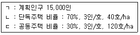
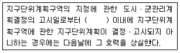
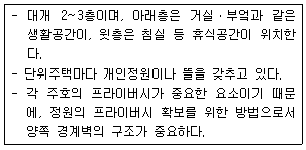
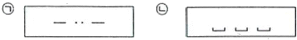
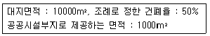
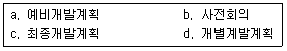
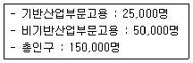
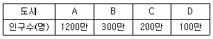
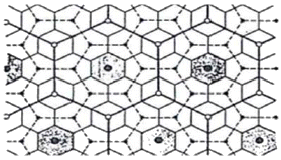

도시계획기사 (2014-05-25 기출문제)
1과목: 도시계획론
1. 케빈 린치가 제시한 도시경관이미지의 구성요소가 아닌 것은?
- Landmak
- Edge
- District
- Zone
(정답률: 83%)

2. 도시성장관리의 목적이 아닌 것은?
- 어반스프롤(Urban Sprawl)의 방지
- 교통용량의 확장과 재개발 억제
- 도시민의 삶의 질 향상
- 효율적인 도시 형태의 구축
(정답률: 87%)
3. 다음 조건일 때 주거지역 전체면적으로 알맞은 것은?

- 80ha
- 90ha
- 100ha
- 120ha
(정답률: 69%)
4. 미래사회 변화에 대비한 새로운 계획 패러다임의 방향으로 보기 어려운 것은?
- 자원 및 에너지 절약형 도시개발로의 전환
- 도ㆍ농 분리적 계획으로 생태 환경 보존
- 시민참여 확대와 개발주체의 다양화
- 입체적ㆍ기능 통합적 토지이용관리
(정답률: 84%)
5. 자본주의 사회의 도시계획에 대한 비판적 분석을 통해 형성되었으며, 도시에서 일어나는 끊임없는 계층 간의 갈등에 대해 정부가 간섭하는 과정을 통해 현대의 도시계획을 분석하고 설명한 계획이론 모형은?
- 협력적 계획 모형
- 정치경제 계획 모형
- 유기적 계획 모형
- 합리적 계획 모형
(정답률: 68%)
6. 철도의 지하정거장, 지하도 또는 지하상가와 연결하여 교통처리를 원활히 하고 이용자에게 휴식을 제공하기 위하여 필요한 곳에 설치하는 광장은?
- 지하광장
- 건축물광장
- 경관광장
- 교통광장
(정답률: 86%)
7. 튀넨(Von Thunen)의 지대이론에 대한 설명이 옳지 않은 것은?
- 지대는 토지의 위치에 따라 달라진다.
- 지대는 농산물이 생산되는 토지와 그 농산물이 판매되는 시장과는 거리에 의해 결정된다.
- 생산성이 같은 토지라도 시장으로부터의 거리에 따라 지대가 달라진다.
- 시장에서 멀러질수록 인구 밀도는 낮고 지대는 높다.
(정답률: 86%)
8. 도시의 구성요소에 관한 설명으로 틀린 것은?
- 시민은 도시를 구성하는 가장 기본적인 요소이다.
- 게데스(P. Geddes)는 도시 활동을 생활, 생한, 위락의 세가지 요소로 구분하였다.
- 도시화의 컨트롤 수단으로써 인구이동의 통제는 토지이용규제보다 더 유료하고 적법하다.
- 도시 활동을 수용하고 지원하기 위해 토지 및 시설이 필요하다.
(정답률: 80%)
9. 도시계획을 위한 자료, 수집의 접근방법에 따라 1차 자료와 2차 자료로 구분할 때, 다음 중 1차 자료가 아닌 것은?
- 현지조사
- 면접조사
- 설문조사
- 통계분석
(정답률: 87%)
10. 고대 도시 및 도시 계획적 특성이 틀린 것은?
- 동양의 고대도시 기원은 기원전 2000년경 황하 중류지방 산둥성 지역에 형성된 상 왕조에서부터 비롯되었다.
- 고대 그리그 도시는 도시 입구와 신전을 축으로 중간 지점에 아고라(Agora)를 배치하였다.
- 로마는 광장(Forum)을 중심으로 발전하였다.
- 히포다무스는 고대 그리스 도시에 방사형 가로체계를 발전시켰다.
(정답률: 81%)
11. 도시기본계획에서 토지이용계획을 위한 토지의 용도 구분에 해당하지 않는 것은?
- 보전용지
- 시가화용지
- 보전예정용지
- 시가화예정용지
(정답률: 75%)
12. 뉴어바니즘(New Urbanism)의 기본 개념으로 틀린 것은?
- 근린주구 구성기법에 근거한 걷고 싶은 보행환경체계 구축
- 다양한 주거양식의 혼합
- 디자인코드(Design Code)에 의한 건축물
- 도시공간의 위계 파괴를 통한 자유스러운 토지이용유도
(정답률: 87%)
13. 도시계획 및 개발시 도시의 스프트웨어적 측면을 중요시하는 경향 중 하나로, 문화, 정보, 미디어 분야 등을 중심으로 관, 산, 학, 연 간의 효과적인 융합이 시너지 효과를 일으킬 수 있는 새로운 산업기반을 갖춘 미래형 도시는?
- 창조적 혁신도시
- 친환경 생태도시
- 행정중심복합도시
- 도시재생
(정답률: 83%)
14. 도시계획시설의 민간 투자방식에 대한 설명이 틀린 것은?
- BOT 방식 : 시설의 준공 후 일정 기간 동안 사업시행자에게 소유권이 인정되며, 기간 만료 시 국가 또는 지방자치단체에 소유권이 이전되는 방식
- BTO 방식 : 시설의 준공과 동시에 국가 또는 지방자치단체에 소유권이 귀속되며, 사업시행자에게 일정기간 시설의 관리 운영권을 인정하는 방식
- BOO 방식 : 시설의 준공과 동시에 국가 또는 지방자치 단체에 소유권이 인정되는 방식
- BLT 방식 : 사업시행자가 시설 준공 후 일정 기간 동안 운영권을 정부에 임대하고 임대 기간 종료 후 시설물을 국가 또는 지방자치단체에 이전하는 방식
(정답률: 69%)
15. 도시기반시설은 목적 측면에서 사익의 추구인가 공익의 주구인가로 구분하고 도시 내 존재의 필요성에 따라 필수성과 선택성으로 구분한다. 이를 4가지의 유형으로 분류하면 공익성ㆍ필수성이면 공공재의 성격이 강하고 사익성ㆍ선택성이면 민간부문에 의한 공급이 가능하다. 다음 시설 중 민간부문의 공급 가능성이 가장 높은 것은?
- 수영장
- 문화시설
- 사회복지시설
- 학교
(정답률: 73%)
16. 1983년 미국 시카고의 만국박람회 개최를 계기로 시작된 도시미화운동이 19세기와 20세기의 토지이용 및 도시계획수립에 미친 영향과 거리가 먼 것은?
- 도시를 미적으로 개선함으로써 도시빈민층들에게 새로운 시민의식과 윤리적 가치를 불어 넣을 수 있었으며 이를 통해 어느 정도 사회악을 제거할 수 있었다.
- 미국의 도시들이 유럽의 미술양식을 이용하여 유럽의 도시들과 문화적으로 대등한 위치에 도달할 수 있었다.
- 도시빈민층의 생활환경개선을 위해 도심부에 많은 민간임대주택의 건설과 일자리 창출을 통해 모두가 평등한 사회를 이룩할 수 있었다.
- 도시 중심부의 활력을 되찾게 함으로써 상류층을 끌어들여서 도시를 번창시킬 수 있었다.
(정답률: 57%)
17. 우리나라 도시계획제도의 성립과 변화 과정에 대한 설명으로 틀린 것은?
- 근대 도시계획제도는 1934년 제정된 조선시가지계획령에서 비롯되었다.
- 1962년 도시계획법이 제정되면서 일제의 잔재를 청산하고 새로운 도시계획체계를 확립했다.
- 1981년 도시계획법이 전면 개정되면서 20년 장기의 도시기본계획수립을 제도화하였다.
- 2002년 국토의 계획 및 이용에 관한 법률을 제정하면서 각각 다른 법률에 의하여 도시지역과 비도시지역으로 관리하도록 운영을 이원화하였다.
(정답률: 74%)
18. 인구증가에 따른 집적의 순이익이 감소하기 시작하여 집적의 이익과 불이익이 같아지는(집적의 순이익이 0이 되는)때까지 나타나는 도시화 현상은?
- 집중적 도시화
- 분산적 도시화
- 역도시화와 탈도시화
- 재도시화
(정답률: 63%)
19. 국토계획에 대한 설명이 틀린 것은?
- 전 국토를 대상으로 국토를 균형있게 발전시키고 국민의 삶의 질을 개선시키고자 하는 공간계획이다.
- 각 지방자치단체가 계획 수립의 주체가 되는 계획이다.
- 국토의 공간구성과 관련있는 모든 분야가 망라되는 종합계획이다.
- 하위계획과 구체적인 집행계획에 지침을 제시하는 지침제시적 계획이다.
(정답률: 79%)
20. 4단계 교통수요추정방법에 대한 설명이 틀린 것은?
- 통행발생, 통행배분, 교통수단선택, 노선배정의 4단계로 나누어 순서적으로 통행량을 구하는 기법이다.
- 현재 교통여건을 지배하고 있는 교통제계의 매커니즘이 장래에도 크게 변하지 않는다고 가정한다.
- 4단계를 거치는 동안 계획가나 분석가의 주관이 개입되지 않아, 객관적인 분석 결과를 얻을 수 있다.
- 총체적 자료에 의존하기 때문에 통행자의 총체적ㆍ평균적 특성만 산출될 뿐, 측면은 거의 무시된다.
(정답률: 78%)
2과목: 도시설계 및 단지계획
21. 다음 중 우리나라에 도시설계제도가 도입된 것에 관한 설명으로 옳지 않은 것은?
- 제도로서의 도시설계를 처음 도입한 것은 1980년 건축법에 도시설계조항을 법제화한 것이다.
- 도시설계를 처음 도입할 당시 주된 관심사는 간선 가로변의 미관 개선에 있었다.
- 도시설계제도가 도입된 지 5년 후인 1985년 상세계획제도가 도입되었다.
- 도시설계 제도와 관련된 법규 중 지구지저 규정의 신설은 1991년에 이루어졌다.
(정답률: 64%)
22. 지구단위계획의 보행동선계획 수립시 유의하여 검토하여야 하는 사항 중 틀린 것은?
- 대지의 규모가 커서 보행자가 우회하지 않게 대지안에 공공보행통로를 지정하는 방안을 검토한다.
- 건축선 후퇴부분에 대하여 주차장 부족에 따른 주차공간으로 활용을 적극 권장한다.
- 보행동선은 계획구역과 구역 이외의 지역과도 제트워크가 형성되도록 하여야 한다.
- 통과교통 억제를 위한 시설 등을 조성하여 보행자전용도로의 설치를 검토하여야 한다.
(정답률: 81%)
23. 국토의 계획 및 이용에 관한 법률에 규정된 지구단위계획의 내용이 아닌 것은?
- 단계별 집행계획
- 기반시설의 배치와 규모
- 용도지역 또는 지구의 세분이나 변경
- 건축물의 배치, 형태, 색채 및 건축선에 관한 계획
(정답률: 53%)
24. 다음 중 단지계획의 수립과정을 크게 목표설정단계, 조사ㆍ분석단계, 기본구상ㆍ대안설정 단계, 기본계획ㆍ기본설계단계, 실시설계ㆍ집행계획단계로 구분할 때, 해당 단계에 대한 설명이 옳지 않은 것은?
- 목표설정단계 : 계획의 전제가 되는 목표를 세우는 것과 그 계획목표에 따라 궁극적으로 달성하고자 하는 목적을 규정하고 구체화하는 단계이다.
- 조사ㆍ분석단계 : 답사와 통계적인 자료로부터 기초조사를 수행한다.
- 기본구상ㆍ대안설정단계 : 설정한 목표에 따라 계획의 지침과 방향을 작성하는 과정이다.
- 기본계획ㆍ기본설계단계 : 건축ㆍ토목ㆍ조경ㆍ각종 설비등으로 구분되어 각 분야의 전문가에게 의뢰하여 작성한다.
(정답률: 70%)
25. 범죄예방환경설계(CPTED)의 기법 중 바람직하지 않는 것은?
- 주변에서 눈에 띄지 않게 외부공간을 조성한다.
- 주민들이 모여 어울릴 수 있는 장소를 조성한다.
- 도시 및 단지 내 시설물을 깨끗하고 정상적으로 유지한다.
- 건물 및 시설물과 외부공간은 서로 잘 보이도록 배치를 조정한다.
(정답률: 83%)
26. 공원 및 녹지의 계획에 관한 내용 중 맞는 것은?
- 어린이공원의 면적은 500m2 이상으로 한다.
- 도보권 근린공원의 면적은 1만 m2 이상으로 한다.
- 공원이용자의 안전을 위해 입구를 제외하고는 가급적 도로를 배치하지 않는다.
- 근린공원은 휴식, 여가, 운동 등 이용자의 옥외활동을 수용할 수 있도록 계획한다.
(정답률: 57%)
27. 도서관에 대한 설명 중 적절치 못한 것은?
- 도서관의 기획단계에서부터 장래 확장을 위한 대비를 미리하여야 한다.
- 지역의 특성과 기능에 따라 도서관의 적절한 계열화를 도모하여야 한다.
- 규모가 큰 도서관이나 본관은 녹지지역 등 주변환경이 수려한 곳에 설치한다.
- 도서관은 도서관법에 따라 공공도서관, 전문도서관으로 나눌 수 있다.
(정답률: 68%)
28. 단지계획의 도로망 구성에 있어서 도로의 폭원에 따라 대로ㆍ중로ㆍ소로로 구분할 경우, 다음 중 중로에 속하지 않는 규모는?
- 12m
- 15m
- 20m
- 25m
(정답률: 74%)
29. 준주거지역으로 용도지역을 지정할 경우 결정조건과 관계가 먼 것은?
- 주택지를 통과하는 주요 건선도로 및 철도역 주변의 주택지
- 계획적 주택단지 내에 상업시설용지가 요구되는 지역
- 주거와 상업용도가 혼재하고 있지만 주로 주거환경을 보호해야 할 지역
- 중ㆍ고층주택을 입지시켜 인근의 주거 및 근린상업시설등이 조화될 필요가 있는 지역
(정답률: 57%)
30. 다음 중 지구단위계획에서 결정할 수 있는 도시ㆍ군계획시설에 해당하지 않는 것은?
- 공원시설-공원묘지
- 유통ㆍ공급시설-공동구
- 공간시설-공공공지
- 공공ㆍ문화체육시설-도서관
(정답률: 56%)
31. 다음 중 괄호 안에 맞는 것은?

- 1년
- 2년
- 3년
- 4년
(정답률: 63%)
32. 다음 중 주택건설기준 등에 관한 규정상에서 500세대 이상의 주택을 건설하는 주택단지에 의무적으로 설치하지 않아도 되는 시설은?
- 유치원
- 어린이놀이터
- 관리사무소
- 주민운동시설
(정답률: 59%)
33. C.A. Perry의 근린주구 개념으로 옳지 않은 것은?
- 크기는 초등학교 1개교를 유치할 수 있는 인구가 적당하다.
- 간선도로로서 경계 되어 구획되어야 한다.
- 지구내의 근린점포는 단지의 중심에 집중되어야 한다.
- 내부 교통은 단지내에서 원활하도록 하고 통과교통에 사용되지 않도록 한다.
(정답률: 69%)
34. 다음 중 아래와 같은 특징을 갖는 주택유형은?

- 연립주택
- 다세대주택
- 중정형주택
- 타운하우스
(정답률: 64%)
35. 다음 중 국지도로 계획에 사용되는 기본패턴에 속하지 않는 것은?
- T자형
- 격자형
- 사다리형
- Cul-de-dac형
(정답률: 70%)
36. 다음 중 도시ㆍ군관리계획결정도의 표시기호인 ㉠과 ㉡에 대한 설명으로 옳은 것은?

- ㉠ - 벽면한계선
- ㉡ - 건축한계선
- ㉠ - 벽면지정선
- ㉡ - 건축지정선
(정답률: 57%)
37. 지구단위계획구역에서 대지면적의 일부가 공공시설부지로 제공되도록 계획되는 경우, 다음의 조건에서 완화 받을 수 있는 건폐율의 범위는?

- 53% 이내
- 55% 이내
- 57% 이내
- 60% 이내
(정답률: 65%)
38. 다음 중 래드번(Radburn)계획의 특징으로 가장 거리가 먼 것은?
- 보도와 차도를 분리하여 계획하였다.
- 주택내부의 공간 배치에 있어서 거실과 침실은 차량 접근 도로쪽에 가깝게 배치하였다.
- 굴데삭(Cul-de-dac)형의 가로망을 일정한 간격으로 배열하고 쿨데삭 주변에 주택을 배치하였다.
- 슈퍼블럭 내 차도를 단일기능 체계로 계획하였다.
(정답률: 65%)
39. 주민제안에 의해 지구단위계획구역 및 계획입안을 할 때 제출되는 계획설명서에 반드시 포함되어야 하는 사항이 아닌 것은?
- 재원조당방안
- 환경에 대한 검토결과
- 교통에 대한 검토결과
- 도시ㆍ군관리계획으로 결정할 지구단위계획의 내용 및 사유
(정답률: 36%)
40. 지구단위계획구역으로 반드시 지정하여야 하는 지역은?
- 도시 및 주거환경정비법에 의하여 지정된 정비구역에서 시행되는 사업이 완료된 후 5년이 경과된 지역
- 택지개발촉진법에 의한 택지개발예정지구에서 시행되는 사업이 완료된 후 7년이 경과된 지역
- 녹지지역에서 주거지역ㆍ상업지역 또는 공업지역으로 변경되는 지역으로서 그 면적이 30만m2인 지역
- 시가화조정구역 또는 공원에서 해제되는 지역으로서 그 면적이 20만m2 인 지역
(정답률: 50%)
3과목: 도시개발론
41. 개발수요를 예측하기 위한 예측 기법 중, 전문가 집단을 개상으로 반복 앙케이트를 행하여 의견을 수집하는 방법은?
- 중력모형
- 이동평균법
- 인과분석법
- 델파이법
(정답률: 87%)
42. 자산유동화에 관한 법률의 제정으로 도입되었으며, 주택저당대출채권, 매출채권, 부동산 등 현금 흐름이 창출될 수 있는 자산을 유동화전문회사에 양도되고, 유동화전문회사가 이들 자산을 기초로 자기명의로 발행하여 투자자에게 매각하는 채권 또는 증권을 무엇이라 하는가?
- 메자닌 금융(mezzanin financing)
- 리츠(ERITs)
- 부동산신탁
- 자산담보부증권(ABS)
(정답률: 73%)
43. Calthorpe(1993) 가 정리한 TOD(Transit Oriented Development)의 원칙으로 틀린 것은?
- 지상공간이 아닌 지하공간을 최대한 활용
- 주택의 유형, 밀도, 비용의 혼합 배치
- 공공공간을 건물배치 및 근린생활의 중심지로 조성
- 기존 근린지구 내에 대중교통 노선을 따라 재개발 촉진
(정답률: 81%)
44. 1981년 미국의 샌프란시스코를 필두로 하여 도심재개발에 적용된 연계정책(Linkage Policy)에 대한 설명으로 가장 거리가 먼 것은?
- D. Keating, G McMahon 등이 링키지(linkage)란 용어를 사용하였다.
- 링키지에 대한 정의의 폭이 각기 다른 것은 연계프로그램의 정책적 내용이 차츰 확대되어 나가고 있음을 반영하는 것으로 볼 수 있다.
- 시당국이 신규로 상업적 개발을 허가해 주는 대신 개발업자에게 일정한 주택, 고용기회, 보육시설, 교통시설등의 건설을 촉구하는 다양한 프로그램으로 정의하기도 한다.
- 업무, 상업시설 등을 고려하여 고소득 주택과의 연계만을 추구하는 것이 일반적이다.
(정답률: 85%)
45. 입찰지대(bid-rent)에 대한 설명이 틀린 것은?
- 입찰지대가 높은 곳은 일반적으로 개발 밀도가 높다.
- 입찰지대는 중심지가 가장 높고 외곽으로 갈수록 낮아진다.
- 입찰지대는 동심원이론을 설명하는 경제학적 토대가 된다.
- 입찰지대가 가장 낮은 곳은 일반적으로 상업용 토지로 이용된다.
(정답률: 75%)
46. 레오 반덴 베르그(Leo van Berg)가 인구변화에 따라 구분한 도시화의 4단계에 해당하지 않는 것은?
- 도시화 단계(stage of urbanization)
- 교외화 단계(stage of suburbaniztion)
- 반도시화 단계(stage of deurbaniztion)
- 신도시화 단계(stage of new-urbaniztion)
(정답률: 85%)
47. 계획단위개발(PUD)의 4단계 시행절차의 순서가 옳은 것은?

- a-b-d-c
- b-c-d-a
- b-d-a-c
- a-d-b-c
(정답률: 86%)
48. 급격한 도시화로 인한 도시문제를 해결하고자 제시한 이상도시 계획안과 계획가의 연결이 틀린 것은?
- 팔란스테르(Phalanstere)-리차드슨(Richardson)
- 선형도시(Linear City) - 소리아 이 마타(A. Soria Y Mata)
- 모형도시(Model Town) - 풀만(Pullman)
- 공업도시(Une Cite Industielle) - 가르니에(T. Garnier)
(정답률: 48%)
49. 주택개발사업의 시행 방식 중 사업시행자가 해당 부지 또는 인접 지역에 소유하고 있는 토지를 이용하여 재개발 지역 주민 일부를 이주시키고 그 지역을 먼저 개발한 뒤 입주시키고 순차적으로 다른 지역으로 확산해 나가는 것은?
- 자력재개발방식
- 위탁재개발방식
- 순환재개발방식
- 합동재개발방식
(정답률: 79%)
50. 도시개발법에 따른 도시개발구역 지정대상지역 및 규모기준이 틀린 것은?
- 주거지역 및 상업지역(도시지역) : 1만 제곱미터 이상
- 도시지역 외의 지역 : 10만 제곱미터 이상
- 자연녹지지역(도시지역) : 1만 제곱미터 이상
- 공업지역(도시지역) : 3만 제곱미터 이상
(정답률: 80%)
51. 도시저소득주민이 집단으로 거주하는 지역으로서 정비기반시설이 극히 열악하고, 노후. 불량 건축물이 과도하게 밀집한 지역에서 주거환경을 개선하기 위하여 시행하는 정비사업은?
- 주거환경개선사업
- 주택재개발사업
- 주택재건축사업
- 도시환경정비사업
(정답률: 70%)
52. 도시재정비 촉진을 위한 특별법에 따른 재정비촉진사업에 해당하는 것은?
- 기업도시개발 특별법에 따른 기업도시개발사업
- 주택법에 따른 국민주택건설사업
- 전통시장 및 상점가 육성을 위한 특별법에 따른 시장정비사업
- 공공주택건설 등에 관한 특별법에 따른 공공주택건설사업
(정답률: 76%)
53. 특수목적회사(SPC)에 대한 설명으로 틀린 것은?
- 채권 매각과 원리금 상환이 주요 업무이다.
- 부실채권 처리 업무가 끝난 후 개발회사로 발전한다.
- 파산 위험 분리 등의 목적으로 유동화 대상자산을 양도받아 유동화 업를 담당한다.
- 부실채권을 매수해 국내외의 투자자들에게 매각하는 중개기관 역할을 한다.
(정답률: 76%)
54. 일정 규모 이사의 단지개발에 있어서 단지 전체를 규제단위로 하여 지역제나 택지분할규제와 같은 일반적 규제를 적용하지 않고 밀도규제 완화, 용도 혼합 등 유연한 토지이용규제를 통하여 단지 전체의 조화를 도모하는 도시개발방법은?
- 계획단위개발
- 단지계획
- 적용특례
- 혼합지역제
(정답률: 66%)
55. 대기오염, 소음, 진동, 악취 그 밖에 이에 준하는 공해와 각종 사고나 자연재해, 그 밖에 이에 준하는 재해 등의 방지를 위하여 설치하는 녹지는?
- 방재녹지
- 경관녹지
- 연결녹지
- 완충녹지
(정답률: 85%)
56. 시장분석 중 시장상황을 전반적으로 검토하기 위한 SWOT분석의 내용이 옳은 것은?
- S(Straight) - W(Wonder) - O(Order) - T(Training)
- S(Strength) - W(Weakness) - O(Opportunity) - T(Threat)
- S(Strength) - W(Weakness) - O(Order) - T(Training)
- S(Straight) - W(Wonder) - O(Opportunity) - T(Threat)
(정답률: 86%)
57. 환지계획구역의 면적이 1000m2, 보류지의 면적이 400m2, 시행자에게 무상귀속되는 공공시설면적이 150m2일 때, 환지계획구역의 평균 토지부담률은 약 얼마인가?
- 19.4%
- 29.4%
- 39.4%
- 49.4%
(정답률: 63%)
58. 토지상환채권의 발생 규모는 그 토지상환채권으로 상환할 토지ㆍ건축물이 해당 도시개발사업으로 조성되는 분양토지 또는 분양건축물 면적의 얼마를 초과하지 아니하도록 하여야 하는가?
- 2분의 1
- 3분의 1
- 4분의 1
- 5분의 1
(정답률: 77%)
59. 도시의 개발 여건 분석에 대한 설명이 틀린 것은?
- 입지분석 : 부지의 이용가치를 극대화하기 위한 분석으로 개발 컨셉을 사업화하기 위한 일련의 ㅌ당성 분석 가운데 가장 먼저 행해지는 것
- 물리적 여건 분석 : 지역이나 장소에 경쟁력을 확보할 수 있는 사업 아이템을 개발하는 것
- 지리적 여건 분석 : 부지 자체가 아닌 그 부지가 속해 있는 좀 더 넓은 범위인 지역 단위의 여건을 분석하는 것
- 법적ㆍ제도적 여건 분석 : 개발은 규제에 영향을 받으므로 개발과 관련된 규제에 대한 분석을 수행하는 것
(정답률: 73%)
60. 도시개발사업 방식 중 도시개발 대상지의 토지 취득 방법에 따른 개발방식이 아닌 것은?
- 혼용방식
- 환지방식
- 전면임대방식
- 수용ㆍ사용방식
(정답률: 83%)
4과목: 국토 및 지역계획
61. 제1차 국토종합개발계획에서의 권역 설정이 옳은 것은?(오류 신고가 접수된 문제입니다. 반드시 정답과 해설을 확인하시기 바랍니다.)
- 환경영향평가를 이용한 환경계획
- 토지적성평가에 의한 환경계획
- 개발밀도에 비례한 환경계획
- 자연의 수용능력에 기반한 환경계획
(정답률: 39%)
62. 지역발전의 경제기반이론에 기초하여 아래 사례지역의 고용통계를 활용하여 기반승수를 구하면 얼마인가?

- 0.17
- 0.50
- 2.00
- 3.00
(정답률: 65%)
63. 다음 각 학자들과 그들이 주장한 지역구분이 바르게 짝지어진 것은?
- Boudevlle - 동질ㆍ분극ㆍ계획ㆍ사업지역
- Herbertson - 지리적ㆍ경제ㆍ사회문화지역
- Hilhorst - 과밀ㆍ중간ㆍ낙후지역
- Hansen - 대도시ㆍ중소도시ㆍ농촌지역
(정답률: 49%)
64. 다음 중 입지계수법(Location Quotient Method)에 대한 설명으로 옳지 않은 것은?
- A지역 특정산업의 입지계수(LQ값)과 1보다 크면 A지역은 해당 산업이 비교적 특화되어 있다는 의미다.
- 중간재의 특성을 고려한 장점이 있다.
- 수출기반모형 중 하나인 입지계수법은 수요모형에 해당한다.
- 어떤 산업의 생산품에 대한 수요수준이 전국적으로 동일하다고 가정하는 모순이 있다.
(정답률: 79%)
65. 지역계획에 대한 설명으로 가장 적절한 것은?
- 지역계획은 최하위 공간 단위계획과 전국계획 사이의 중간 계층적 공간 계획을 의미한다.
- 지역계획은 최소 1개 이상의 공간 단위를 대상으로 한 전국계획 하위 체계의 공간 계획이다.
- 지역계획은 국가 경제성장 정책의 수행을 위한 사회경제적 수단을 제시하는 전략적 종합 계획이다.
- 지역계획은 도시의 광역화에 따라 발생하는 문제를 효과적으로 대처하기 위한 중앙 정부에 의한 조정적 계획이다.
(정답률: 58%)
66. 로렌츠 곡선(Lorena Curve)이 지역계획 수립시에 활용되는 경우로 적당한 것은?
- 지역간 인구이동의 분석 및 예측
- 국민소득의 지역간 분포격차 분석
- 지역인구의 성별, 연령별, 인구구조분석
- 지역적인 차원에서의 산업부분간 경제활동의 상호의존관계분석
(정답률: 72%)
67. 다음 중 윌리암슨(Williamson)이 주장한 지역간 소득격차와 국가발전 단계와의 관계에 대한 설명으로 가장 옳은 것은?
- 지역간 소득격차는 역U자형 곡선을 그린다.
- 지역간 소득격차는 국가 발전의 초기단계에 가장 적다.
- 윌리암슨은 미르달의 이론을 경험적으로 검증하였다.
- 주적적 인과법칙에 의하여 지역격차가 발생함을 밝혔다.
(정답률: 81%)
68. 우리나라의 제1차 및 제2차 국토종합개발계획에 주로 이용되었던 개발 방식은?
- 농촌지역 개발방식
- 거점개발방식
- 완전균형개발방식
- 자유방임개발방식
(정답률: 83%)
69. 다음 중 경제기반이론(economic base Theory)에 관한 설명으로 가장 거리가 먼 것은?
- 기반활동만이 지역경제의 원동력이고 비기반활동은 지역성장에 기여하지 않는 부수적인 활동이라고 가정한다.
- 개념적으로 지역의 경제활동을 단순하게 기반활동과 비기반활동으로 분류하기 어려운 산업활동이 있다.
- 지역의 성장이 지역에서 생산되는 재화의 외부 수요에 의해 결정된다는 것에 기초한다.
- 경제기반승수가 계속 변화한다고 가정하기 때문에 모형은 실제로 단기 예측에는 부적절하다.
(정답률: 62%)
70. 수도권정비계획법에서 구분하고 있는 구역의 종류로서 옳지 않은 것은?
- 과밀억제권역
- 성장관리권역
- 자연보전권역
- 개발촉진권역
(정답률: 75%)
71. 지역 문제의 해결을 위해 여러 가지 대안을 도출하고 이를 평가하여 최종안을 결정 하고자 할 때 다음 중 가장 적절하지 못한 방법은?
- 비용편익분석(Benefit/cost analysis)
- 계획대차대조표법(planning balance sheet)
- 정수계획법(integer programming)
- 목표성취행렬법(goals achievement matrix)
(정답률: 42%)
72. 다음 중 국토 및 지역계획의 기능별 분류로서 옳지 않은 것은?
- 배분적 계획(allocative planning)
- 지역적 계획(regional local planning)
- 성장유도 계획(growth promoting planning)
- 쇄신적 계획(innovative planning)
(정답률: 35%)
73. 국토기본법에 의하여 수립되어야 할 지역계획에 해당하지 않는 것은?(관련 규정 개정전 문제로 여기서는 기존 정답인 3번을 누르면 정답 처리됩니다. 자세한 내용은 해설을 참고하세요.)
- 수도발전계획
- 광역권개발계획
- 부문별계획
- 개발촉진지구개발계획
(정답률: 54%)
74. 다음과 같은 인구 조건에서 종주화지수(primary index)는 얼마인가? (단, 전국의 인구는 2000만 명이다.)

- 0.60
- 0.75
- 2.0
- 3.3
(정답률: 72%)
75. 지역의 외부수요가 지역경제의 성장을 선도합을 전제한 모형은?
- 투입산출모형
- 수출기반모형
- 지역혁신모형
- 섹터모형
(정답률: 72%)
76. 우리나라의 국토 및 지역계획의 문제점으로 가장 거리가 먼 것은?
- 지역주민이 직접 입안하는 계획
- 계획입안기관의 독주성 및 형식성
- 관련 계획과의 연계적 체계성 결여
- 외부경제와 비경제는 없다.
(정답률: 73%)
77. 개발촉진지구지정에 관한 설명으로 틀린 것은?
- 국토교통부장관은 개발수준이 낮아 개발이 필요하다고 인정될 경우에는 광역시장 또는 도지사의 요청을 받아 개발촉진지구를 지정할 수 있다.
- 국토교통부장관은 개발촉진지구를 지정하는 경우
- 개발촉진지구지정기간이 경과한 때에는 그 기간 만료일부터 개발촉진지구의 지정이 해제된 것으로 본다.
- 수도권정비계획법에 의해 수도권에는 개발촉진지구를 지정할 수 없다.
(정답률: 55%)
78. 다음 중 대도시의 성장 억제를 위한 정책과 가장 거리가 먼 것은?
- 광역도시계획
- 수도권정비계획
- 과밀부담금제도
- 개발제한구역 지정
(정답률: 64%)
79. 토다로(Michael Todaro)의 인구이동 모형에 대한 설명으로 가장 타당한 것은?
- 주로 선진국의 농촌과 도시 간의 인구이동현상을 설명하는 모형이다.
- 도시에서 주변 농촌으로 역류하는 인구이동현상을 설명하는 모형이다.
- 실질소득보다 기대소득의 개념으로 인구이동현상을 설명하는 모형이다.
- 사회주의 국가의 농촌과 도시 간의 인구이동현상을 설명하는 모형이다.
(정답률: 59%)
80. 다음 그림은 크리스탈러의 중심지 계층에 관한 포섭원리 중 어떤 원리를 나타내는 것인가?

- 시장원리
- 교통원리
- 행정원리
- 확산원리
(정답률: 44%)
5과목: 도시계획관계법규
81. 도시 및 주거환경정비법상 주거환경개선사업을 목적으로 우선 매각하는 국ㆍ공유지의 매각가격은 평가금액의 얼마를 기준으로 하는가?
- 100분의 90
- 100분의 80
- 100분의 70
- 100분의 50
(정답률: 65%)
82. 중앙도시계획위원회의 구성과 운영 등에 대한 설명이 옳은 것은?
- 중앙도시계획위원회는 국토교통부에 둔다.
- 위원장과 부위원장은 위원 중에서 국무총리가 임명하거나 위촉한다.
- 위원장은 중앙도시계획위원회의 업무를 총괄하며, 지방도시계획위원회의 의장이 된다.
- 회의는 재적위원 2/3의 출석으로 개의하고, 출석위원 3/4의 찬성으로 의결한다.
(정답률: 44%)
83. 도시개발사업의 환지계획에 대한 설명으로 틀린 것은?
- 환지계획은 종전의 토지와 환지의 위치ㆍ지목ㆍ면적ㆍ토지ㆍ수리ㆍ이용 상황 그 밖의 사항을 종합적으로 고려하여 합리적으로 정하여야 한다.
- 국가나 지방자치단체가 시행자인 경우, 건축물의 일부와 그 건축물이 있는 토지의 공유지분을 부여할 수 없다.
- 환지를 정하거나 그 대상에서 제외한 경우 그 과부족분은 금전으로 청산하여야 한다.
- 시행자는 도시개발사업에 필요한 경비에 충당하기 위하여 일정한 토지를 환지로 정하지 아니하고 보류지로 정할 수 있으며, 그 중 일부를 체비지로 정하여 필요한 경비에 충당할 수 있다.
(정답률: 70%)
84. 국토의 계획 및 이용에 관한 법률상 시설보호지구에 해당되지 않는 것은?
- 학교시설보호지구
- 군사시설보호지구
- 항만시설보호지구
- 공항시설보호지구
(정답률: 50%)
85. 공간계획의 기본이 되는 법률로, 국토에 관한 계획 및 정책의 수립ㆍ시행에 관한 기본적인 사항을 정함으로써 국토의 건전한 발전과 국민의 복지 향상에 이바지함을 목적으로 제정ㆍ시행되는 것은?
- 국토기본법
- 택지개발촉진법
- 도시개발법
- 국토의 계획 및 이용에 관한 법률
(정답률: 53%)
86. 도시개발법에 의한 개발계획의 규모가 100만m2 이상인 경우 도시공원 또는 녹지의 확보 기준으로 옳은 것은?
- 상주인구 1인당 3m2 이상 또는 개발 부지 면적의 5% 이상 큰 면적
- 상주인구 1인당 5m2 이상 또는 개발 부지 면적의 7% 이상 큰 면적
- 상주인구 1인당 7m2 이상 또는 개발 부지 면적의 10% 이상 큰 면적
- 상주인구 1인당 9m2 이상 또는 개발 부지 면적의 12% 이상 큰 면적
(정답률: 55%)
87. 산업입지 및 개발에 관한 법령상 사업시행자가 개발토지ㆍ시설등을 분양 또는 임대받을 자를 선정함에 있어, 산업시설용지를 우선적으로 선정 받을 수 있는 자가 아닌 경우는?
- 개수도권정비계획법의 관련 규정에 의한 과밀억제권역으로부터 이전하고자 하는 자
- 국외에서 운영하던 사업장을 국내로 이전하려는 자
- 재생계획에 의하여 이전이 요구되는 자
- 관련 법률의 규정에 따라 증축을 원하는 공장을 소유하고 있는 자
(정답률: 50%)
88. 도시ㆍ군계획시설로의 결정ㆍ구조 및 설치기준에 관한 규칙에 따른 도시ㆍ군계획시설의 결정ㆍ설치 기준이 옳은 것은?
- 도로는 규모별 구분과 기능별 구분이 일치하여야 한다.
- 철도역은 제 1종전용주거지역ㆍ보전녹지지역 및 보전관리지역외의 지역에 설치하여야 한다.
- 주차장은 원활한 교통의 연계를 위하여 주간선도로에 진ㆍ출입구를 설치하도록 한다.
- 교차점광장은 각종 차량과 보행자 흐름을 방해할 우려가 있으므로 주요 도로의 교차 지점에는 가급적 설치를 피한다.
(정답률: 50%)
89. 자연보전권역의 행위제한 완화대상이 아닌 것은? (단, 보기항 ①~➂의 사업은 오염수도권정비법령에 따라 총량관리계획 시행지역에서 시행하는 것을 말한다.)
- 관광지조성사업 중 시설계획지구의 면적이 3만m2 이상인 것으로서 수도권정비위원회 심의를 거친 것
- 6만m2 이하의 도시개발사업 중 수도권정비위원회 심의를 거친 것
- 30만m2 이상의 택지조성사업 중 수도권정비위원회 심의를 거친 것
- 자연보전권역에서의 전문대학, 대학원대학 또는 소규모 대학의 이전
(정답률: 25%)
90. 주차장법에 따른 주차장의 종류가 아닌 것은?
- 공공주차장
- 노상주차장
- 노외주차장
- 부설주차장
(정답률: 76%)
91. 도시개발사업의 개발계획 수립 및 시행 등과 관련한 대상지 주민의 동의 기준이 옳은 것은?
- 환지 방식의 개발계획 수립 시 환지 방식이 적용되는 지역의 토지면적의 3분의 2 이상에 해당하는 토지 소유자와 그 지역의 토지 소유자 총 수의 3분의 1이상의 동의를 받아야 한다.
- 조합ㆍ설립의 인가를 신청하려면 해당 도시개발구역의 토지면적의 3분의 1이상에 해당하는 토지 소유자와 그 구역의 토지 소유자 층수의 2분의 1이상의 동의를 받아야 한다.
- 도시개발구역의 토지 소유자가 토지 등을 수용하는 경우 사업대상 토지면적의 3분의 2이상에 해당하는 토지를 소유하고 토지 소유자 총수의 3분의 1이상에 해당하는 자의 동의를 받아야 한다.
- 토지 소유자가 도시개발구역의 지정을 제안하려는 경우 대상 구역 토지면적이 3분의 2이상에 해당하는 토지소유자의 동의를 받아야 한다.
(정답률: 74%)
92. 주택종합계획에 포함되어야 할 내용이 아닌 것은?
- 주택정책의 기본목표에 관한 사항
- 택지의 수요ㆍ공급 및 관리에 관한 사항
- 주택의 재건축에 관한 사항
- 주택자금의 조달 및 운용에 관한 사항
(정답률: 43%)
93. 건축법상 용어의 정의가 틀린 것은?
- 대지 : 측량ㆍ수로조사 및 지적에 관한 법률에 따라 각필지로 나눈 토지
- 건축 : 건축물을 신축ㆍ징축ㆍ개축ㆍ이전 또는 대수선하는 것
- 건폐율 : 대지면적에 대한 건축면적의 비율
- 용적률 : 대지면적에 대한 연면적의 비율
(정답률: 76%)
94. 택지개발지구가 고시된 날부터 얼마 이내에 택지개발사업 실시계획의 작성 또는 승인신청을 하지 아니하는 경우, 그 지정이 해제되는가?
- 6개월 이내
- 1년 이내
- 2년 이내
- 3년 이내
(정답률: 50%)
95. 개발제한구역의 지정 및 관리에 관한 특별조치법령에 따른 취락지구의 지정기준 및 정비에 관한 설명으로 틀린 것은?
- 취락을 구성하는 주택의 수가 10호 이상이어야 한다.
- 취락지구 1만m2 당 주택의 수가 원칙적으로 30호 이상이어야 한다.
- 취학지구의 경계 설정 시 지목이 대인 경우에는 가능한 한 필지가 분할되지 아니하도록 한다.
- 취락지구정비사업을 시행할 때에는 국토의 계획 및 이용에 관한 법률에 따라 취락지구를 지구단위계획구역으로 지정한다.
(정답률: 47%)
96. 도시ㆍ군관리계획 결정이 효력을 발생하는 시기 기준은?
- 지형도면을 고시한 날부터
- 도시계획위원회의 심의 후 다음 날부터
- 도시관리계획결정이 고시가 된 날부터 3일 후부터
- 도시ㆍ군관리계획결정이 고시가 된 날부터 5일 후부터
(정답률: 68%)
97. 국토계획의 종류 및 수립권자의 연결이 옳은 것은?
- 도종합계획 : 도지사 또는 국토교통부장관
- 부문별계획 : 중앙행정기관의 장 또는 지방자치단체의 장
- 국토종합계획 : 국무총리
- 지역계획 : 중앙행정기관의 장 또는 지방자치단체의 장
(정답률: 47%)
98. 국민주택기금에 관한 내용이 틀린 것은?
- 국민주택기금은 국토교통부장관이 운용ㆍ관리한다.
- 국민주택기금의 운용ㆍ관리에 관한 사무를 위탁받은 기금수탁자는 대통령령으로 정하는 바에 따라 국민주택기금의 조성 및 운용 상황을 국토교통부장관에게 보고하여야 한다.
- 국토교통부장관은 국민주택기금의 운용에 관한 계획을 수립하려는 경우에는 미리 기획재정부장관과 협의하여야 한다.
- 국민주택기금의 회계연도ㆍ운용계획 및 결산 등에 관하여는 원칙적으로 국민연금법을 적용한다.
(정답률: 42%)
99. 관광진흥법상 관광지 및 관광단지의 개발에 관한 설명으로 옳은 것은?
- 관광지 및 관광단지는 문화체육관광부장관이 지정한다.
- 관광지 및 관광단지의 조성계획은 문화체육관광부장관의 승인을 받아야 한다.
- 시ㆍ도지사(특별자치도지사는 제외)는 관광개발기본계획에 따라 구분된 권역을 대상으로 권역별 관광계획을 수립하여야 한다.
- 시장ㆍ군수ㆍ구청장이 관광단지 조성계획을 변경하는 경우 국토교통부장관의 승인을 받아야 한다.
(정답률: 52%)
100. 문화재와 문화적으로 보존가치가 큰 건축물 등의 미관을 유지ㆍ관리할 필요가 있어 지정하는 것은?
- 경관지구
- 일반미관지구
- 역사문화미관지구
- 중심지미관지구
(정답률: 86%)